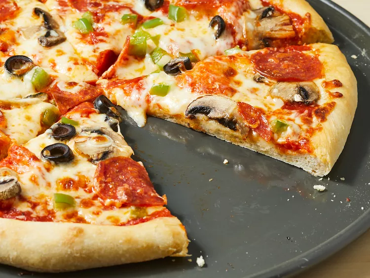

PIZZAAA!!!

This pizza is so delicious you could die
Ingredients:
- 1 1/4-oz. packet active dry yeast (2 1/4 teaspoons)
- 2 tsp. granulated suga
- 1 1/2 c. warm water (90 to 100°)
- 4 c. all-purpose flour
- 2 tbsp. olive oil, divided, plus more for brushing
- 2 1/4 tsp. kosher salt
- 1/4 c. grated parmesan cheese, divided
- 1 c. Homemade Pizza Sauce, divided
- 3 c. shredded low-moisture mozzarella cheese, divided
- 1 c. cubed fresh mozzarella cheese, divided
- Fresh basil, to serve
Steps:
- Sprinkle the yeast and sugar over the warm water (90 to 100°) in the bowl of a stand mixer. Whisk to combine and then let sit until bubbles have formed on the top, about 5 minutes. Add the flour, 1 tablespoon of olive oil, and salt, and mix with the dough hook on low speed until the dough comes together, about 2 minutes. Scrape the bottoms and sides of the bowl. Increase
the speed to medium-low until everything is well incorporated and the dough is sticky, 2 to 3 minutes more.
- Drizzle the top of the dough and down the sides of the bowl with the remaining 1 tablespoon of olive oil. Use a rubber spatula to flip the dough to coat in the oil. Cover the bowl with
plastic wrap and let it rise until doubled, about 1 hour and 30 minutes.
- About 1 hour before you're ready to make pizza, place a pizza stone, steel, or an upside-down
baking sheet on the upper third rack of the oven. Preheat the oven to 500°.
- On a lightly floured work surface, cut the dough in half and form into tight rounds. To form a nice round, flatten the dough onto the counter in a circle and fold all the edges into the center of the circle. Flip it over and gently pull the round against the counter to form a taut ball. Place the rounds on a lightly floured baking sheet with enough space for them to
rise and expand. (If you're not ready to make pizza, cover them with plastic wrap. Refrigerate the covered dough balls for up to 2 days. Remove the dough from the refrigerator and allow to sit at room temperature for 30 minutes before proceeding.)
- Place a 14-inch piece of heavy-duty foil on top of an upside-down half-sheet pan.
Lightly brush the foil with oil and dust with flour. While working with one round of dough, cover the other with plastic wrap.
- On a well-floured surface, press 1 piece of dough into an 8-inch round with a 1-inch outer lip. Carefully lift the dough with your hands cupping the lip to keep from flattening it. Working quickly, rotate the edge of the dough through your hands in a clockwise motion, allowing gravity to stretch the dough into a round shape. Place the dough back on the
flour and stretch it into a 12-inch circle. Transfer it to the prepared foil.
- Sprinkle the surface of the pizza with 2 tablespoons of grated parmesan. Spread 1/2 cup Homemade Pizza Sauce over the parmesan, leaving a 1-inch border. Sprinkle the pizza with 1 1/2 cups of
low-moisture mozzarella and 1/2 cup of cubed fresh mozzarella.
- Using the upside-down baking sheet as a pizza peel, transfer the pizza with the foil to the preheated baking stone. Bake until the crust is browned and the cheese is bubbling, 12 to 14 minutes. Transfer pizza from the foil to a cooling rack. Brush
the crust with olive oil, sprinkle the surface with basil leaves, and serve hot.
- Repeat the process with the remaining dough, sauce, and cheese.
Do not assemble the pizza until right before it goes into the oven.
How to cook a pizza like a pro